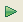
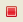

This page explains how to use a Mongrel server with RadRails.
Contents |
Introduction
You can set up and run a Mongrel server the same way that you would run a WEBrick server. You can create a new Mongrel server either when you create a Rails project or after you create the project. Use the Servers View to control your Mongrel server.
Before starting to work with a Mongrel server, make sure that you set your Mongrel path in your Rails preferences. (See Configuring your RadRails setup for instructions.
Instructions
Creating a Mongrel server
You can create a Mongrel server when you initially create your Rails project (see Starting a new RadRails project), or you can create one afterwards. To create a Mongrel server after you have created a RadRails project:
- In the Rails Navigator View, right-click your project and select New > Mongrel Server from the context menu to open a New Mongrel Server window.
- In the Project field, type the name of your project (if it is different from the default value).
- In the Name field, type a name for your server (if different from the default value).
- In the Port field, type the port number for your server (if different from the default).
- Click the Finish button to create your server.
Running a Mongrel server
To run a Mongrel server:
- In the lower portion of your workbench, click the Servers tab to access the Servers View.
- In the Servers View, select your server.
- Click the Start button  to start your server.
- Click the Stop button  to stop your server.
{kind=link}
{kind=link}
The Servers View also gives you the following options:
- Click the Launch Browser button to launch your project in a web browser.
- Click the Refresh button
 to refresh your server.
to refresh your server.
- Click the Edit button to edit your server properties.
- Click the Remove button
 to delete the selected server.
to delete the selected server.
{kind=link}
{kind=link}